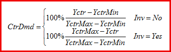
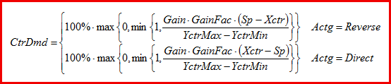
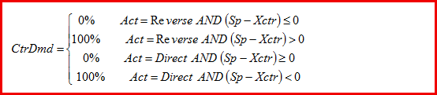
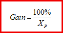

CTR：控制器
功能块描述
CTR (FB300) 块是通用 PID 控制器（P、PI、PD 或 PID），具有外部跟踪功能。它提供调节操纵变量。 CTR_SiUn (FB300)、CTR_UsUn (FB349)
块 CTR 还有助于创建序列控制器和序列级联控制器。
- Sequence controller: One CTR per sequence controller element; possibly one SEQLINK block.
- Sequence cascade controller: One CTR per sequence controller element; additional CAS_CTR and possibly one SEQLINK block.
顺序控制器的控制响应对于每个顺序控制器元件是不同的或者对于所有顺序控制器元件是相同的。 CTR_SiUn (FB300)、CTR_UsUn (FB349)
功能块 CTR 可用作：
- universal P(I)(D) controller,
- universal PI(D) controller with tracking,
- one specific sequence control element within a sequence control logic,
- manager or subordinate controller within a cascade control logic.
它可用于控制温度、压力或湿度等变量。
的功能P, PI, PD, PID controllers
功能块中集成了以下功能：
- P, PI, PD, PID, 2-point control or staged control configurable, see table below.
- Gain, integral action time and derivative action time separately parametrizable
- Range of manipulated variable tunable by minimum and maximum control output
- Inversion of manipulated variable configurable
- Control gain factor linkable (for gain adaptation)
- Tunable neutral zone for control error
- Bias (for P and PD controller) parametrizable
- Rise time (for 0 – 100%) and fall time (for 100 – 0%) of the manipulated variable settable
- Control action type configurable (direct/reverse)
| CtrTyp | ||
PID | Staged | ||
| 连续的 | PID control (default) 使用的控制参数： 不相关的控制参数： | Staged control 使用的控制参数： NumSts, HysSwiOn, HysSwiOff, SwiDly 不相关的控制参数： |
2位 | Forced 2-position control 使用的控制参数： 不相关的控制参数： | ||
PID 控制器 – 独立案例
当将控制类型 [CtrTyp] 设置为 PID 并将控制模式 [CtrMod] 设置为 Continuous 且控制器增益 [Gain] > 0 时，CTR 充当 P(I)(D) 控制器。
PID 控制器具有三个主要参数来指定控制行为：
- Controller gain [Gain]
- Integral action time [Tn]
- Derivative action time [Tv]
或者，控制器增益可以通过可链接的 FB 可变增益因子 [GainFac] 进行校正。这种校正或增益调度可能有助于控制空气处理单元中的混合空气风门，因为控制增益取决于测量的温度。
下面的各个部分描述了 PID 控制器的其他控制参数及其效果。
控制器输出范围 [YctrMin, YctrMax]
控制输出[Yctr]的范围由[YctrMin]和[YctrMax]指定，见下图。当控制器被 [OoServ] = TRUE 设置为停止服务时，这些限制无效。

Note:输出限制 [YctrMin] > [YctrMax]
如果[YctrMin]大于[YctrMax]，则控制输出范围设置为单个值[YctrMax]，即[Yctr] = min{[YctrMin],[YctrMax]}。因此，作用于 [YctrMax] 的限制控制器将能够强制控制输出低于 [YctrMin]。另一方面，作用于 [YctrMin] 的限制控制器可能只会将控制输出增加到 [YctrMax]。
控制器作用类型 [Actg]
控制器作用类型[Actg]决定操纵变量[Yctr]和控制变量[Xctr]之间的关系，见下图。
Direct acting:如果实际值 [Xctr] 增加，则控制器输出值 [Yctr] 增加，例如降温、除湿。
Indirect acting:如果实际值 [Xctr] 增加，则控制器输出值 [Yctr] 减少，例如加热、加湿。

Notes 关于控制器输出的反转：
控制器输出 [Yctr] 的反转也可以通过使用参数 [Inv] 来完成。这对于顺序控制可能是必要的。
中性区 [Nz]
中性区 [Nz] 是设定点周围的不敏感范围。如果在 7 个控制器周期内设定点 [Sp] 和控制变量 [Xctr] 之间的距离小于中性区的 1/4，则控制输出 [Yctr] 将被冻结。当设定点 [Sp] 和控制变量 [Xctr] 之间的距离大于中性区的 1/2 时，控制操作恢复，参见下图。

控制器输出偏移 [YctrOfs]
如果控制器参数化为 P 或 PD 控制器，则可以指定偏置或偏移量 [YctrOfs]。如果没有控制错误（并且控制器已打开），控制器输出将为 [YctrOfs]，请参见下图。如果控制器参数化为 PI 或 PID 控制器，则控制器输出偏移 [YctrOfs] 也用作积分器起始值： 一旦控制器打开并开始控制，控制器积分器值就会设置为 [YctrOfs]。

控制器输出上升时间[Ti0to100]和下降时间[Ti100to0]
[Ti0to100]、[Ti100to0]限制操作变量[Yctr]的最大信号增加或信号减少，见下图。

逆[Inv]
控制器输出 [Yctr] 的反转基本上根据以下公式计算：
[Yctr]Inv = 100% – [Yctr]NotInv
控制器输出限制 [YctrMin] 和 [YctrMax] 以及控制器输出上升时间 [Ti0to100] 和下降时间 [Ti100to0]（对于 [Inv] = TRUE）与反相控制器输出相关。如果控制器切换（[EnFnct] = FALSE 和 [OoServ] = FALSE），则对于反转控制器，控制器输出 [Yctr] 也将设置为 0%，请参见下图。

控制变量跟踪[EnTrack]/[Track]
将有效操纵变量返回到输入 [Track] 可提高 PI 或 PID 控制器的控制质量（例如抗饱和）。这称为外部控制变量跟踪。
如果 [EnTrack] = FALSE，则禁用跟踪，并且 [Track] 不作为跟踪信号处理。
如果 [EnTrack] = TRUE，则启用跟踪，并且 [Track] 将作为跟踪信号进行处理。
Example:如果控制器直接作用于执行装置（例如，最小或最大选择），则控制器的定位信号不会影响控制路径。将有效定位信号返回到跟踪输入使控制器保持当前值，并保证在控制器不再干预时持续进行调制控制。
Note:如果为序列的控制器元件设置了外部跟踪，则必须确保可以达到设置的极限值 [YctrMin] 和 [YctrMax]。否则，只有在发生高控制错误时，顺序控制器才能切换到下一个顺序控制器元件。作为外部跟踪的替代方案，在限制应用的情况下可以直接影响限制值 [YctrMin] 和 [YctrMax]。
控制算法
功能块 CTR 中实现的 P(I)(D) 控制算法符合 100% 控制标准。

上图：无外部跟踪的 PID 控制算法的连续时间框图（在 P 或 PD 控制器的情况下，控制输出偏移量 uOfs使用而不是积分器值）

上图：带有外部跟踪的 PID 控制算法的连续时间框图
Staged control – stand alone case
将控制类型 [CtrTyp] 设置为 Staged Control 并将控制模式 [CtrMod] 设置为 Continuous 时，CTR 充当具有 [NumSts] 级的分级控制器。将 [CtrMod] 设置为 2 位会强制功能块 CTR 具有 2 位控制，而不管 [CtrTyp] 设置如何，请参阅本文档前面的《FB CTR 的控制操作模式》表。
2 位控制
当将控制模式 [CtrMod] 设置为 2 位控制时，功能块 CTR 充当 2 位控制器。或者，当将 [Gain] 设置为零时，可以实现 2 位控制行为（这与设置 [CtrTyp] 无关，即对于 PID 和分级控制）。开关点由迟滞 [HysSwiOn] 和 [HysSwiOff] 以及作用类型 [Actg] 指定，直接作用 2 位控制请参见下图。
为了使控制器进行切换，控制变量必须超过相应的切换点，并且最后一次切换动作至少提前一个切换延迟时间 [SwiDly] 发生。

分级控制
当绝对控制误差|[Sp]-[Xctr]|时大于开关迟滞，则控制器递增 /decrements 输出 – 除非最后一级开关发生的时间晚于开关延迟 [SwiDly]。只要最后一个阶段切换动作比切换延迟更近，就不会执行阶段切换，请参见下图。为了执行级切换，没有绝对控制误差的最小持续时间标准。
对于分级控制，控制输出[Yctr]将按大小100%/[NumSts]设置分级（整数格式没有分级输出）。
Example:如果 [YctrMin] = 0% 且 [YctrMax] = 100% 且 [NumSts] = 4，则控制输出 [Yctr] 将为 0%、25% 50% 75% 或之一100%，参见下图示例。

控制输出限制 [YctrMin] 和 [YctrMax] 可用于限制最小和最大阶段。如果提供的值与阶段值（以百分比表示）不完全对应，则该函数会四舍五入到最近的阶段。
Example:如果 [NumSts] = 4 且 [YctrMin] = 20%，则 [YctrMin] 将四舍五入为 25%，并且使用的最小阶段为 1。
控制器偏移量 [YctrOfs] 不用于初始化分级控制器。此外，跟踪输入 Track 也不由分级控制器处理。
Changing the control operation type
综合控制与非综合控制之间的转换
如果通过将 [Tn] 设置为零而将 PI(D) 控制器更改为非积分控制器，则控制器的积分器值将设置为零。
如果将非集成控制器（P、PD、分级或 2 位控制器）更改为 PI(D) 控制器，则控制器的现有积分器值将被接管并限制在范围 [YctrMin, YctrMax] 内。
在 PID 和分阶段控制之间切换
如果 PI(D) 控制器更改为分级控制器，则实际控制输出 [Yctr] 立即舍入为最近的级输出。例如。如果 [NumSts] = 4，则 [Yctr] = 69.3% 的值将舍入为 [Yctr] = 75%。之后，执行分级控制算法。
对于积分作用时间 [Tn] > 0 的 2 位或分级控制器，积分器值由控制输出的内部跟踪确定，请参见图 2 7。这仅在 2 位或分级控制器更改为 PI(D) 控制器时相关：如果 2 位或分级控制器更改为 PI(D) 控制器，则使用跟踪的积分器值。
当需要平滑过渡时，例如，此过程通常是有益的。用于在用于早晨预热的 2 位控制（最佳启动控制）和用于舒适的 PI(D) 控制之间进行转换。
在禁用和启用控制之间切换
如果禁用控制器（[EnFnct] = FALSE、[OoServ] = FALSE），则控制输出 [Yctr] 将设置为 0%，与 [Inv] 和其他控制器设置无关。
如果启用了 PI(D) 控制器，则积分器值从 [YctrOfs] 开始积分。控制输出 [Yctr] 从 0% 或 [YctrMin]（如果 [YctrMin] > 0%）或 [YctrMax]（如果 [YctrMax < 0%）开始，考虑最大上升和下降时间 [Ti0to100] 和 [Ti100to0]。
如果启用了分级控制器，则如果 0% 在 [YctrMin, YctrMax] 范围内，则控制输出 [Yctr] 从 0% 开始。否则，[Yctr] 开始限制在该区间内。例如。 [YctrMin] = 15%，[YctrMax] = 70%，[NumSts] = 4，控制输出 [Yctr] 从 25% 开始（[YctrMin] 四舍五入）。
在停止服务和 PID 或分阶段控制之间进行更改
如果控制器停止运行，控制输出 [Yctr] 将设置为默认值 [DefVal]。
如果 PI(D) 控制器从停止运行更改为“运行中”，则积分器值从 [DefVal] 开始积分。
如果分级控制器从停止运行变为“运行中”，则控制输出 [Yctr] 立即四舍五入为最近的级输出（来自 [DefVal]）。例如。如果 [NumSts] = 4，则 [Yctr] = [DefVal] = 69.3% 的值四舍五入为 [Yctr] = 75%。之后，执行分级控制算法。
PID and staged controller – sequence control case
如果使用多个聚合来根据预定义的控制序列来控制受控值，则使用序列控制器。序列控制器根据控制序列切换各个序列控制器元件，并在跨所有序列控制器元件或集合体的相互关联的控制行为中协调对各个控制器元件的控制。
顺序控制器主要用于空调中控制温度和湿度。然而，没有理由不使用顺序控制器来解决其他应用中的适当控制问题。
Building up a sequence controller
序列控制器由多个序列元素组成，而所有序列元素都是功能块 CTR 的实例。序列元素的互连可以直接完成，也可以通过序列链接器功能块 SEQLINK 完成（参见下图）。


Communication signals between sequence elements
序列元素通过信息通道 [ToLower] > [FmHigher] 和 [ToHigher] > [FmLower] 相互通信。通过此通信交换以下信息：
Pin | Message | |
[.CtlMod] | 控制方式 | |
(1) Nil | 未连接（默认值）。 | |
(2) Act | 控制有效。 | |
(3) Off | 控制关闭。 | |
(4) On | 控制已打开。 | |
[.Crdn] | 协调信息 | |
(1) Nil | 未连接（默认值）。 | |
(2) Low | 控制有效。 | |
(3) ErrLow | 顺序协调错误。 | |
(4) High | 控制输出最大边沿。 | |
| (5) ErrHigh | 预留，尚未使用。 |
[.Ctkn] | 控制令牌信息 | |
(1) Nil | 未连接（默认值）。 | |
(2) Low | 控制元件较低或传递较低。 | |
(3) Act | 控制器正在动作。 | |
(4) High | 控制元件较高或传递较高。 | |
[.IsInt] | 积分商信息 | |
(1) TRUE | 未连接（默认值）。 | |
(2) FALSE | 控制有效。 | |
[.DeltaE] | 比例控制器零件信息涵盖的错误。 | |
(1)实际价值。 | ||
顺序控制元件的作用类型
通常，顺序控制器由单独的 CTR 块组成。每个 CTR 充当聚合的序列控制元素。 CTR 块的互连顺序（从低到高）对应于顺序控制器的控制顺序 (1 ... n) 的顺序。在互连 CTR 元件时，必须相应地考虑计划的工作范围（例如加热）和开关顺序。
具有四个元件的顺序控制示例（参见下图）：1 = 再热器（最低元件）、2 = 预热器、3 = 风门、4 = 冷却器（最高元件）。
随着热需求的增加，供暖按以下顺序提供：3 > 2 > 1。
随着冷量需求的增加，冷却由元件 4 提供（> 5 ...如果存在）。
最低序列控制元素对应于控制序列1，最高序列控制元素对应于控制序列n。最低顺序控制元素使用反向操作（如果可用）控制聚合。最高顺序控制元素使用直接操作（如果可用）控制聚合。

受控聚合的操作（例如加热、冷却）决定了顺序控制元件的控制操作 [Actg] 的方向。如果运行期间聚合的作用类型发生变化，则还必须为相应的顺序控制元件设置此类更改： 请参阅下图了解顺序控制元件的变化作用类型 3。 如果受控聚合需要反转信号，则控制器输出的反转 [Inv] 有助于解决此问题。

在控制序列内，从最低到最高序列控制元件的作用类型 [Actg] 只能更改一次，并且只能从反向作用更改为正作用。如果不满足此要求，即如果控制动作参数化不正确，则将停用有故障的控制序列元件并释放下一个有效的控制序列。顺序控制器元件参数设置不正确，设置 [ErSta] = Yes。有关错误配置的示例，请参见下图。
故障控制序列元件将通过令牌状态[TknSta]输出有关故障的信息。正作用元件将输出 [TknSta] = Hel_CSeq（加热序列中的冷却元件），反作用元件将输出 [TknSta] = Cel_HSeq（冷却序列中的加热元件）。

顺序控制元件的设定值
在顺序控制器中，顺序控制元件 (1 ... n) 的设定值 [Sp] 必须单调增加：
[Sp]1≤ [Sp]2≤ [Sp]3≤ ... ≤ [Sp]n
如果具有相同控制作用方向的控制序列具有相同的设定值，则可以确保从一种控制序列转换到另一种控制序列时进行调节控制，请参见下图。

无能量区域由控制动作方向转换时的设定值（例如加热设定值、冷却设定值）定义，参见下图。

顺序控制算法
功能块 CTR 中实现的顺序控制算法符合 100% 控制标准 [3]。 [3] 涵盖以下主题：
- Coordination mechanisms of sequence control elements
- Control token passing and receiving for different controller types
- Examples and description of special cases, in particular “mixed” sequences or special control parameter settings.
Control outputs
调节变量 [Yctr] 及其组成部分 [Yctrp]、[Yctri]、[Yctrd]
[Yctr] 表示主控制输出，通常指定执行器的位置。对于 PID 控制器，显示部分受控变量 [Yctr] 以用于诊断目的：
- The proportional part [Yctrp]
- The integral part [Yctri]
- The derivative part [Yctrd]
对于不具有受控变量所有部分的控制器类型，相应的输出设置为零。对于不具有控制任务的控制器（禁用、停止服务或非控制序列元素），控制部分也设置为零。
错误状态 [ErrSta]
Pin | E | Description | |
ErSta | a | 故障状态。 | |
0（否） | 序列配置错误。 | ||
1（是） | 无序列配置错误。 | ||
控制状态[CtrSta]
CtrSta | f | 控制器状态。 控制器或顺序控制器元件的控制器状态。 | |
1（按键关闭） | 控制器已关闭。 | ||
2（CtrCmd） | 控制器停止工作或 [YctrMin] ≥ [YctrMax]。 | ||
3（控制） | 控制器正在主动控制[Yctr]。 | ||
4（CtrMin） | 控制器输出 [Yctr] = [YctrMin]。 | ||
5（点击最大） | 控制器输出 [Yctr] = [YctrMax] | ||
令牌状态 [TknSta]
TknSta | a | 令牌状态。 序列控制器元素的令牌状态。 | |
1（不知道） | 控制元素没有控制任务（控制未启用）。 | ||
2（CtrTkn） | 控制元素确实具有控制任务（启用控制）。 | ||
3（综合知识） | 控制元素确实具有控制任务（启用控制）。 | ||
4（两个Tkns） | 顺序控制元件配置错误：加热元件处于冷却顺序中。 | ||
5 (Hel_CSeq) | 顺序控制元件配置错误：加热元件处于冷却顺序中。 | ||
6 (Cel_Hseq) | 顺序控制元件配置错误：冷却元件处于加热顺序中。 | ||
7 (RTFault) | 顺序控制器元件错误。 | ||
控制需求 [CtrDmd]
[CtrDmd]输出控制器的控制要求。这是一个百分比标准化信号，范围从 0%（无需求）到 100%（最大需求）。如果控制器被禁用 ([EnFnct] = FALSE)、停止服务 ([OoServ] = TRUE)、错误 ([ErSta] = TRUE) 或 [YctrMin] ≥ [YctrMax]，则 [CtrDmd] 设置为零。
否则，控制器根据 [EnFnct] 计算其需求。
Control demand calculation if [EnFnct] = TRUE
控制器根据其实际控制输出 [Yctr] 相对于控制输出限制 [YctrMin] 和 [YctrMax] 计算其需求（参见下图）：


如果 [EnFnct] = FALSE 则控制需求计算
在这种情况下，控制器根据控制误差和设置计算所谓的虚拟需求。对于独立的 P(I)(D) 控制器，虚拟需求对应于控制输出的归一化 P 部分：

如果控制器是独立的 2 位或分阶段行为，则虚拟需求定义为：

如果控制器是顺序控制器的一部分，则虚拟需求被校正，因为其虚拟需求输出必须符合整个顺序控制器。进行了以下更正：
- The controller acts indirectly ([Actg] = Reverse), a lower sequence control element has the control task and controls actively: CtrDmd = 100%.
- The controller acts directly ([Actg] = Direct), a higher sequence control element has the control task and controls actively: CtrDmd = 100%.
- The controller acts indirectly ([Actg] = Reverse), a higher indirectly acting sequence control element has the control task and controls actively: CtrDmd = 0%.
- The controller acts directly ([Actg] = Direct), a lower directly acting sequence control element has the control task and controls actively: CtrDmd = 0%.
显示的控制要求 [CtrDmd]
如果满足控制需求计算标准，则控制器按如上所述计算其需求。根据输入的[DmdMod]，可以显示控制需求：
- [DmdMod] = Off: Demand calculation turned off, [CtrDmd] = 0% regardless of the calculated demand CtrDmd.
- [DmdMod] = 2-position: [CtrDmd] = 0% if CtrDmd = 0%, or [CtrDmd] = 100% if CtrDmd > 0%
- [DmdMod] = Continuous: [CtrDmd] = CtrDmd
启动和错误处理
硬件上电后，功能块输出在第一个控制周期内初始化。初始化周期后，该函数等待 3 个周期来消除不利的处理顺序。此后，假设特别是顺序控制通信输入[FmLower]和[FmHigher]有效，并且通过利用输入处的值来执行该功能。
Inputs and outputs of the function block
Note:这CTR提供工程单位和默认值设置temperature control.如果该块用于其他控制目的，例如光或湿度的工程单位和默认值必须是adapted accordingly.这很重要，否则从 SI 到另一个单位系统的单位转换过程将无法正常工作。
输入
Pin | Description | Data type | Default value | Engineering unit or Text group | Min. | Max. |
EnFnct | 启用功能 | 布尔值 | 1（是） | 不，是 |
|
|
OoServ | 中止服务 | 布尔值 | 0（关） | 关、开 | 离开 | On |
DefVal | 默认值 | 真实的 | 0.0 | % | 0.0 | 100.0 |
Sp | 设定值 | 真实的 | 20.0 | °C | -50.0 | 150.0 |
68.0 | °F | -58.0 | 302.0 | |||
Xctr | 控制器输入 | 真实的 | 20.0 | °C | -50.0 | 150.0 |
68.0 | °F | -58.0 | 302.0 | |||
GainFac | 增益系数 | 真实的。 | 1.0 | — | -3.402822E38 | 3.402822E38 |
Gain | 获得 | 真实的 | 10.0 | %/K | 0.0 | 3.402822E38 |
5.5 | %/°F | 0.0 | 3.402822E38 | |||
Tn | 积分动作时间Tn | 时间 | 2m | T#0d_0h_0m_0s_0ms |
|
|
Tv | 微分作用时间 Tv | 时间 | 0ms | T#0d_0h_0m_0s_0ms |
|
|
Nz | 中立区 | 真实的 | 0.5 | K | 0.0 | 10.0 |
1.0 | °F | 0.0 | 18.0 | |||
Ti0to100 ... | 从 0 到 100% 的上升时间 | 时间 | 1m | T#0d_0h_0m_0s_0ms |
|
|
Ti100to0 | 从 100 到 0% 的下降时间 | 时间 | 1m | T#0d_0h_0m_0s_0ms |
|
|
YctrMax | 控制器输出最大 | 真实的 | 100.0 | % | 0.0 | 100.0 |
YctrMin | 控制器输出最小值 | 真实的 | 0.0 | % | 0.0 | 100.0 |
YctrOfs | 控制器输出偏移量 | 真实的 | 0.0 | % | 0.0 | 100.0 |
Actg | 控制动作方向 | 布尔值 | 1（反向） | 正向、反向 |
|
|
CtrTyp | 控制器类型 | 多态 | PID controller | PID 控制器/阶段控制器 | PID controller | PID controller |
CtrMod | 控制器模式 | 布尔值 | 0（连续） | 连续/2位 |
|
|
HysSwiOn | 迟滞开关开启 | 真实的 | 0.0 | % | 0.0 | 00.0 |
HysSwiOff | 迟滞关闭 | 真实的 | 0.0 | % | 0.0 | 00.0 |
SwiDly | 开关延时 | TIME | 300 | 时:分:秒 | 0 | 最大限度。 |
NumSts | 级数 | INT | 1 | — | 1 | 10 |
DmdMod | 需求模式 | 多态 | 2位 | 关闭/2位/连续 | 离开 | 连续的 |
Inv | 逆 | 布尔值 | 0（否） | 不，是 |
|
|
EnTrack | 跟踪启用 | 布尔值 | 0（否） | 不，是 |
|
|
Track | 追踪 | 真实的 | 0.0 | % | 0.0 | 100.0 |
FmHigher | 来自更高的邻居 | 记录 |
|
|
|
|
FmLower | 来自下层邻居 | 记录 |
|
|
|
|
TshVal | 阈值 | 真实的 | 0.1 |
| 0.0 | 3.402822E38 |
BaObjRef | BA 对象引用 | 记录 |
|
|
|
|
输出
Pin | Description | Data type | Default value | Engineering unit or | Min. | Max. |
ErSta | 故障状态 | 布尔值 | No | 否/是 | 是的 | No |
CtrSta | 控制器状态 | 多态 | CtrOff | CtrOff / CtrCmd / CtrOn / CtrMin / CtrMax | CtrOff | CtrMax |
TknSta | 代币状态 | 多态 | NoTkn | NoTkn / CtrTkn / Hel_CSwq / Cel_HSeq / RTFault | NoTkn | RTFault |
Yctr | 控制器输出 | 真实的 | 0.0 | % | 0.0 | 100.0 |
Valid | 有效的 | 布尔值 | No |
|
|
|
CtrDmd | 控制器需求 | 真实的 | 0.0 | % | 0.0 | 100.0 |
ToHigher | 到更高的邻居 | 结构体 |
|
|
|
|
ToLower | 降低邻居 | 结构体 |
|
|
|
|
Yctrp | 控制器输出比例部分 | 真实的 | 0.0 | % | -3.402822E38 | 3.402822E38 |
Yctri | 控制器输出积分部分 | 真实的 | 0.0 | % | -3.402822E38 | 3.402822E38 |
Yctrd | 控制器输出微分部分 | 真实的 | 0.0 | % | -3.402822E38 | 3.402822E38 |
OoServOut | 停止服务，输出 | 布尔值 | 离开 |
|
|
|
GainOut | 增益、输出 | 真实的 | 10.0 | %/K | 0.0 | 3.402822E38 |
TnOut | 积分动作时间 Tn，输出 | Time S7BN | T#OD_OH_2M_0S_0MS |
|
|
|
TvOut | 导数作用时间 Tv，输出 | Time S7BN | T#OD_OH_0M_0S_0MS |
|
|
|
NzOut | Neutral zone, output | 真实的 | 0.5 | K | 0.0 | 40.0 |
Ti0to100Out | 从 0 到 100% 的上升时间，输出 | Time S7BN | T#OD_OH_1M_0S_0MS |
|
|
|
Ti100to0Out | Fall time from 100 to 0%, output | Time S7BN | T#OD_OH_1M_0S_0MS |
|
|
|
YctrMaxOut | 控制器输出最大、输出 | 真实的 | 100.0 | % | 0.0 | 100.0 |
YctrMinOut | 控制器输出最小，输出 | 真实的 | 0 | % | 0.0 | 100.0 |
YctrOfsOut | 控制器输出偏置、输出 | 真实的 | 0.0 | % | 0.0 | 100.0 |
CtrTypOut | 控制器类型、输出 | 枚举 | PID controller |
| PID controller | 分级控制器 |
HysSwiOnOut | 迟滞接通、输出 | 真实的 | 0.5 | K | -100.0 | 100.0 |
HysSwiOffOut | 迟滞关断，输出 | 真实的 | 0.5 | K | -100.0 | 100.0 |
SwiDlyOut | 接通/off 延迟，输出 | Time S7BN | T#OD_OH_5M_0S_0MS |
|
|
|
NumStsOut | 级数、输出 | 整数 | 1 |
| 1 | 10 |
ErrCode | 错误代码指示 | 枚举 | 对象不可访问 |
| 没有错误 | 群组成员溢出 |
ErrWrit | 写入时出错 | 枚举 | 对象不可访问 |
| 没有错误 | 群组成员溢出 |
RErrNr | 读取时出现错误号 | 整数 | 16383 |
| 0 | 65535 |
WErrNr | 写入时出现错误编号 | 整数 | 13683 |
| 0 | 65535 |
Pin description
输入
联系 | 描述 | |
|---|---|---|
EnFnct | 启用功能。 | |
1（是）： | 控制器已启用。 | |
2（否）： | 控制器被禁用。 | |
OoServ | 中止服务。 | |
(1) On | 控制器输出[Yctr]和操作变量整数部分的初始化值设置为[DefVal]。输出[Yctrp]、[Yctri] 和[Yctrd] 设置为0。[Yctr] 可以被命令。 | |
(2) Off | 未命令控制器输出 [Yctr]。 | |
DefVal | 默认值。 | |
Sp | 设定点。 | |
Xctr | 控制器输入。 | |
GainFac | 增益系数 | |
获得 | 获得。  | |
Tn | 积分动作时间。 | |
Tv | 微分作用时间。 | |
Nz | 中立区。 | |
钛0至100 | 从 0 到 100% 的上升时间。 | |
钛100to0 | 从 100% 下降到 0% 的时间。 | |
YctrMax | 控制器输出最大。 | |
YctrMin | 控制器输出最小。 | |
YctrOfs | 控制器输出偏移。 | |
行动 | Control action | |
(1) Direct | 直接作用如冷却、除湿。 | |
(2) Reverse | 间接作用如加热、加湿。 | |
注意：控制器输出 [Yctr] 的反转与 [Inv] 一起发生。顺序控制器工程：对顺序控制器元件进行参数化。 | ||
CtrTyp | 控制器类型 | |
PID controller | 该控制器充当 PID 控制器。 | |
分级控制器 | 控制器充当分级控制器。 | |
CtrMod | 控制器模式 | |
连续的 | 控制器不强制为 2 位控制器。 | |
2位 | 该控制器是强制 2 位控制器。 | |
DmdMod | 需求模式 | |
离开 | 需求消息关闭，[CtrDmd] 设置为 0%。 | |
2位 | 对于需求 = 0%，设置 [CtrDmd] = 0%，否则设置 100%。 | |
连续的 | 标准化信号 0-100 输出到 [CtrDmd]。 | |
库存 | 逆 | |
是的 | 控制器输出信号 [Yctr] 的反转。 | |
No | 无反转。 | |
EnTrack | 跟踪启用。 | |
是的 | [跟踪]集成在控制过程中。 | |
No | 没有外部跟踪。 | |
追踪 | 追踪 | |
HysSwiOn | 迟滞开关打开。 | |
HysSwiOff | 迟滞关闭。 | |
SwiDly | 开关延迟。 | |
NumSts | 阶段数。 | |
FmLower | 来自下层邻居。 | |
FmHigher | 来自更高的邻居。 | |
输出
ErSta | 故障状态 | |
No | 没有发生错误。 | |
是的 | 发生错误。 | |
CtrSta | 控制器状态 | |
CtrOff | 控制器已关闭。 | |
CtrCmd | 控制器不控制，但[Yctr] = DefVal。 | |
CtrOn | 控制器正在主动控制 [Yctr]。 | |
CtrMin | 控制器关闭 [Yctr] = YctrMin。 | |
CtrMax | 控制器关闭 [Yctr] = YctrMax。 | |
TknSta | 代币状态 | |
NoTkn | 序列控制器元素没有令牌。 | |
CtrTkn | 序列控制器元件具有控制器令牌。 | |
Hel_CSeq | 顺序控制器元件的控制动作方向不正确，例如，加热顺序位于冷却顺序中。 | |
Cel_HSeq | 顺序控制器元件的控制动作方向不正确，例如，冷却顺序位于加热顺序中。 | |
yctr | 控制器输出。 | |
CtrDmd | 控制器需求。 | |
ToLower | 为下邻。 | |
ToHigher | 到更高的邻居。 | |
yctrp | 控制器输出比例部分 | |
尤克特里 | 控制器输出积分部分 | |
yctrd | 控制器输出微分部分 | |
Background sequence control
本节给出了顺序控制器最重要的要求和原则。有关序列控制和算法的更多信息，请参阅[3]。
顺序控制要求
基于顺序控制解决方案经验的要求：
- Setpoints shall be parametrizable per sequence element.
- The sequence element that starts controlling shall be specifiable.
- Each sequence element shall be enabled or set out of service individually.
- Each sequence element does incorporate an individual controller.
- The initial control output when sequence control is switched on shall be specifiable.
- Each sequence element does have an individual neutral zone.
其他要求
- The sequence controller has to be able to handle a direct and/or a reverse acting (partial) consisting of one or several sequence control elements.
- Both (partial) sequences can consist of an arbitrary number of sequence control elements.
- The setpoints may only be equal or increase form a lower to a higher sequence control element.
- For each sequence control element, the control behavior can be arbitrarily specified: P-, PI-, PID-, PD-controller or staged controller including 2-position controller.
- Each PID sequence control element includes a controller as described in [2].
- Each sequence control element shall be settable out of service individually.
- Only one sequence control element does control at the same time. All other elements are either disabled, out of service, erroneous or at their minimum or maximum output.
- For each sequence control element, control parameters shall be parametrized individually.
- If all control parameters of a PID sequence controller do have the same values (Sp, Gain, Tn, Tv), the sequence control behavior shall be identical to a single (split range) controller.
- The acting type of each sequence control element shall be parametrizable and also changeable at run-time.
- The control output of each sequence control element shall be invertable.
- Each sequence control element shall display its actual control state with the following states:
- CtrOff: the controller is switched off
- CtrCmc: the controller is out of service or [YctrMax] ≤ [YctrMin]
- CtrOn: the controller is switched on and its control output [Yctr] is greater than [YctrMin] and lower than [YctrMax]
- CtrMin: the controller is switched on and its control output [Yctr] equals [YctrMin]
- CtrMax: the controller is switched on and its control output [Yctr] equals [YctrMax]
- If the control output of the controlling sequence element reaches its minimum or maximum, the control task is passed to the next (lower or higher) sequence element that is ready for control (enabled and not erroneous or out of service).
顺序控制原理
顺序控制器遵循的最基本原则是：
- At every time point, only one sequence control element does the control (has the control task).
- The control outputs of the non-controlling sequence control elements are constant. Exception: when changing an element back in service or from disabled to enabled, the control output transitions to the mimimum or maximum value.
- Non-available sequence control elements (disabled, out of service or erroneous elements) pass on communication to their neighboring elements (shortcut).
简化的功能原理如下图所示：

Application
控制结构
功能块 CTR 是一个通用控制元件，可应用于各种控制问题。该元素可用于不同的控制结构，例如：
- Stand-alone P(I)(D) control
- Stand-alone 2-position or staged control
- Limitation control: The output of a main control element output is limited by a limitation controller acting on the main control elements’ input [YctrMin] or [YctrMax]
- Cascade control: A main control variable is control by an outer control loop controller which outputs a setpoint for a supplementary control variable that is controlled by the inner control loop controller
- Sequence control: One control variable is controlled by several actuators (aggregates) in a specified sequence
控制示例
下图显示了功能块 CTR 的应用示例：空气处理机组的串级控制。通过作用于三个聚合加热盘管、冷却盘管和能量回收单元的顺序控制，在内部控制回路中控制送风温度。在外控制回路中，通过顺序控制来控制室温。外部控制回路输出送风温度设定值以及调制通风信号。
内控制回路包括两个作用于外回路通风控制器的限制控制器。如果最大加热或冷却无法分别满足送风温度设定点，这可以防止通风控制增加风扇速度。